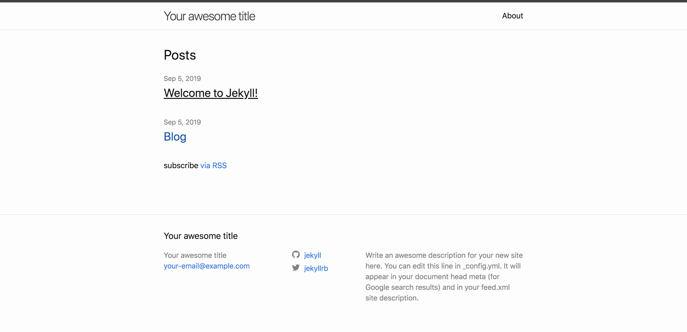
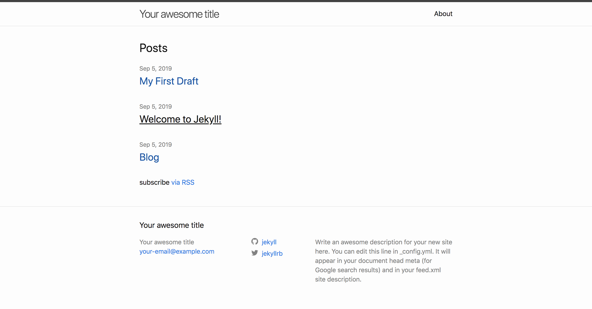
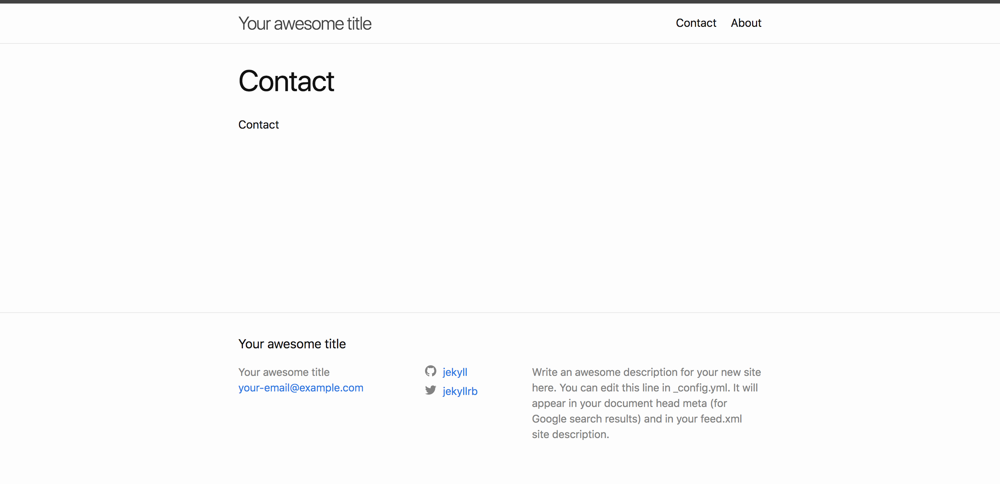
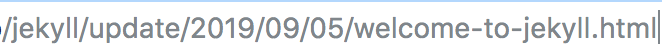
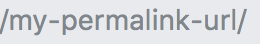
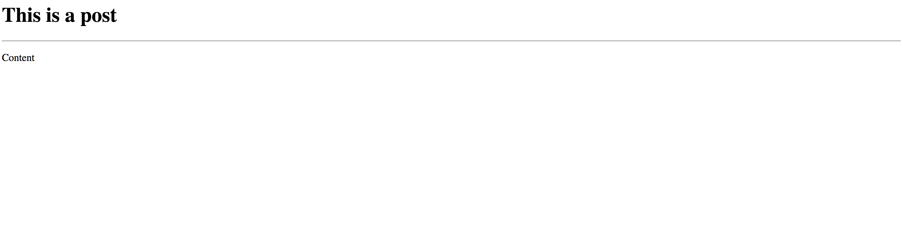

Chapter 1 Jekyll Installation
Have Ruby installed
ruby -v
Have gem installed
gem -v
Install Jekyll
gem install bundler jekyll
jekyll -v
Chapter 2 Creating a site
Create Jekyll Site
jekyll new my-awesome-site
cd my-awesome-site
bundle exec jekyll serve
Open your browser to localhost:4000
{kind=link}
[info] These are important files
- yml file
- configuration
- gemfile
- dependency
Chapter 3 Front Matter
open _posts By modifying the front matter in the page you will be able to change the way it displays on the website Front matter is also associated with the URL of the page
---
layout: post
title: "Welcome to Jekyll!"
date: 2019-09-05 15:18:50 +0000
categories: jekyll update
---
Chapter 4 Writting Post
Create md file in the _posts folder 2019-09-05-my-first-blog-post.md
This post will show up on the webpage
Add the front matter variable, layout, title, date, categories

{kind=link}
Chapter 5 Draft
Create _drafts folder
Create md file in the _drafts folder My-first-draft.md
Build draft file
jekyll serve --draft
The draft will show up on the webpage

{kind=link}
Chapter 6 Creating Page
Create md file Contact.md
Add front matter variable
---
layout: page
title: contact
---
The contact page will show up on the webpage

{kind=link}
Chapter 7 Permalink
The URL of the page is dependent on the front matter.

But if you want to give a permanent URL, you can create permalink variable
{kind=link}
---
layout: post
title: "Welcome to Jekyll!"
date: 2019-09-05 15:18:50 +0000
categories: jekyll update
permalink: "/my-permalink-url/"
---
The URL will be

There is also other things we can do. We can also access certain variable
{kind=link}
---
layout: post
title: "Welcome to Jekyll!"
date: 2019-09-05 15:18:50 +0000
categories: jekyll update new
permalink: /:categories/:year/:month/:day/:title
---
The URL will be /jekyll/update/new/2019/09/05/welcome-to-jekyll
[info] The permalink allows you to create unique link
Chapter 8 Front Matter Default
Let's say that you do not want to create front matter every single time. you would add this to your yml file
defaults:
-
scope:
path: ""
values:
layout: "post"
You can also specify type under scope
defaults:
-
scope:
path: ""
type: "posts"
values:
layout: "post"
Chapter 9 Theme
theme: minima
This controls what theme your website using.
What happens when you want to use a different theme?
There are libraries of themes for check out on the internet.
You would come over to this website rubygems.org and search for jekyll-theme.
Let's say that you want to use jekyll-theme-hacker. You would add this to your gemfile.
gem "jekyll-theme-hacker"
You would also install the theme.
bundle install
You would also go to yml file and add this to the file.
theme: jekyll-theme-hacker
Let's go to jekyll-theme-hacker homepage and access the _layouts folder.
There is only a default layout. You would replace all the front matter tags with layout: default.
Chapter 10 Layout
We would create our own layout.
Create _layouts folder and add post.html file.
---
---
<h1>This is a post</h1>
<hr>
{{ content }}
In the 2019-09-05-my-first-blog-post.md file, you would replace the front matter tag with layout: post.

You would also create wrapper.html.
{kind=link}
<html>
<head>
<meta charset="UTF-8">
<title>Document</title>
</head>
<body>
Wrapper
<br>
{{ content }}
<br>
Wrapper
</body>
</html>
You would also add this to post.html.
---
layout: wrapper
---
<h1>This is a post</h1>
<hr>
{{ content }}
{kind=link}